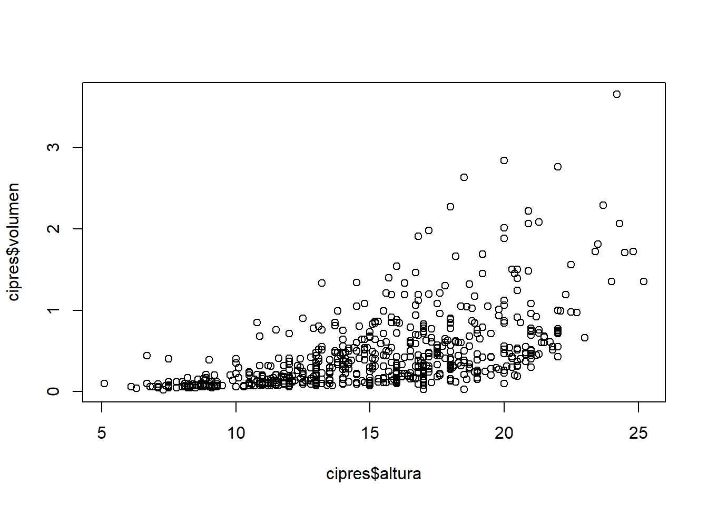
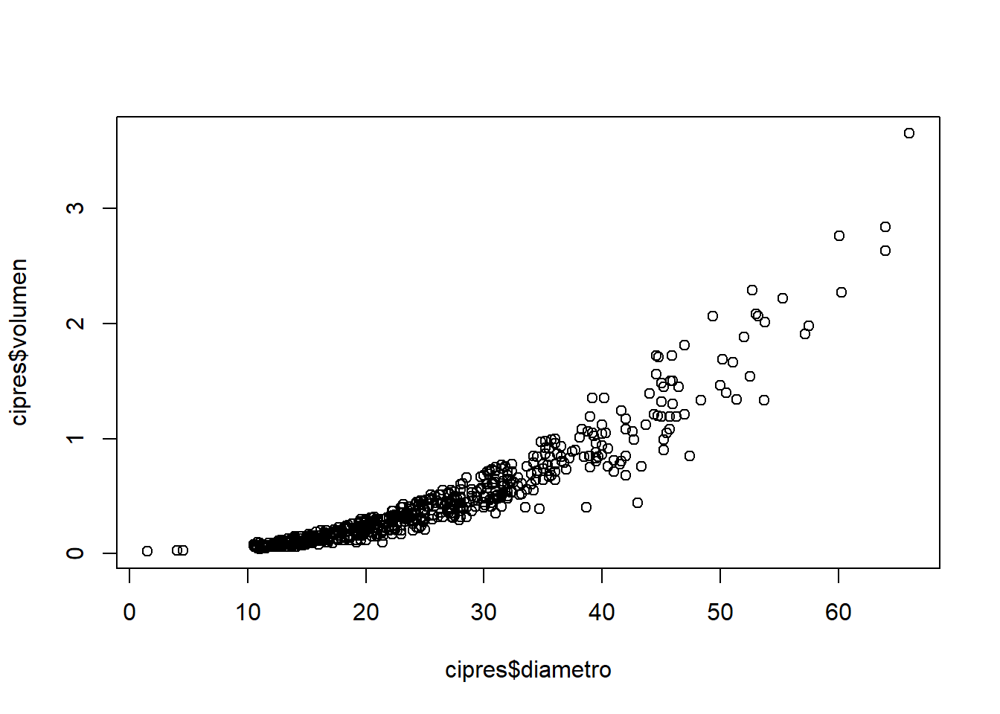
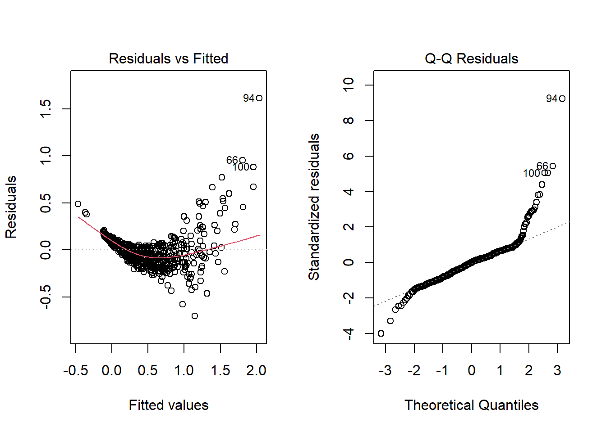
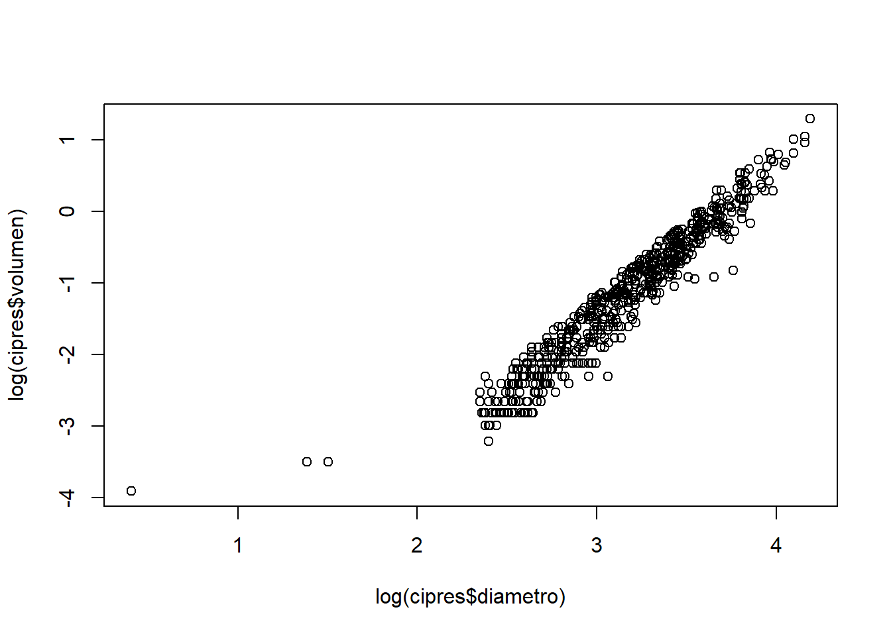
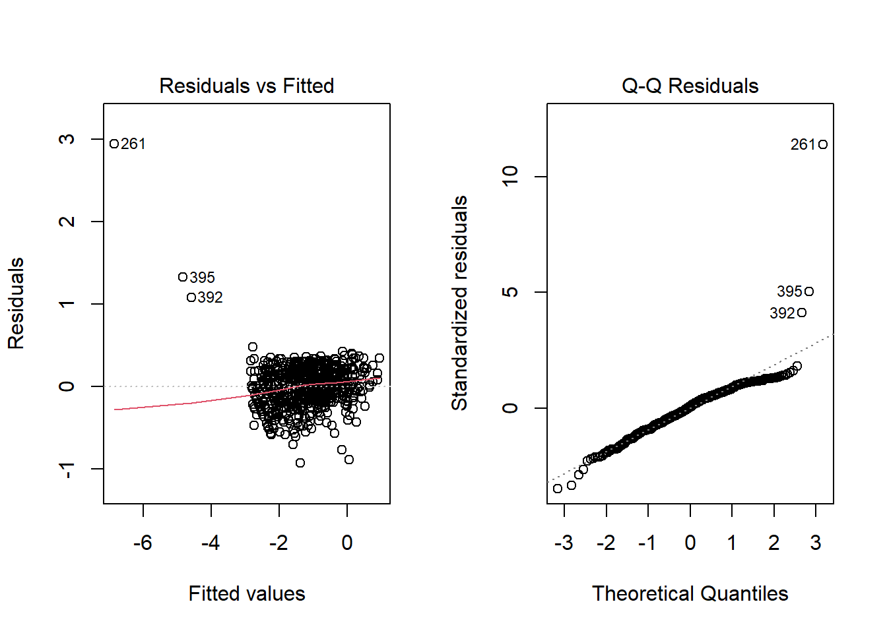
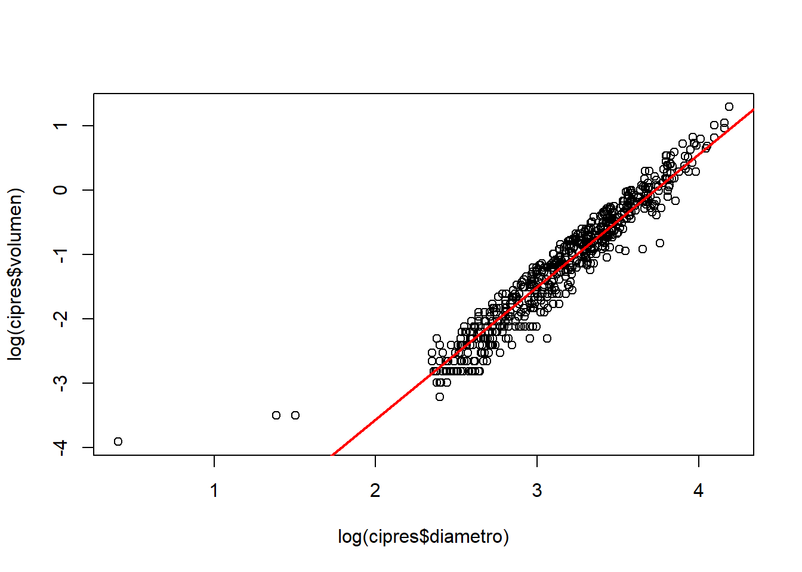

# Instalación y carga de paquetes
# Incluye ggplot2, dplyr, tidyr
if (!require("tidyverse")) install.packages("tidyverse")
# Se utiliza para leer archivos excel
if (!require("readxl")) install.packages("readxl")
# Se utiliza para evaluar el supuesto de homosedasticidad
if (!require("car")) install.packages("car")14 Análisis de regresión lineal simple usando R
La regresión lineal es una técnica estadística utilizada para modelar la relación entre una variable dependiente (respuesta) y una o más variables independientes (predictoras). Este análisis permite predecir valores, evaluar relaciones y entender cómo las variables están conectadas.
En esta sección, se exploran dos tipos de regresión:
Regresión lineal simple: Relación entre una variable dependiente y una sola variable independiente.
Regresión lineal múltiple: Relación entre una variable dependiente y múltiples variables independientes.
14.1 Preparación del área de trabajo
Instalación y carga de los paquetes necesarios para desarrollar esta sección
14.2 Carga de datos
El código para cargar los datos es el siguiente:
# Importar un archivo Excel
cipres <- read_excel("cipres.co.xlsx",
sheet = "Hoja1",
col_names = TRUE)Posteriormente, se realiza una exploración inicial de los datos para comprender su estructura y contenido:
Para visualizar las primeras filas:
# Visualizar los primeros registros del data frame
head(cipres)# A tibble: 6 × 3
diametro altura volumen
<dbl> <dbl> <dbl>
1 34 14.5 0.6
2 24.3 13.5 0.29
3 37 15 0.73
4 33.6 14 0.56
5 17 12.2 0.14
6 38.5 16.1 0.84Las variables principales del conjunto de datos son:
altura: Altura de los arboles en pies.diametro: Diámetro de los arboles en cmvolumen: Volumen de los arboles en metros cúbicos. (revisar unidades de medida)
14.3 Exploración inicial de los datos
Antes de ajustar un modelo de regresión, se realiza un análisis descriptivo para identificar patrones iniciales en las variables.
14.3.1 Gráfico de dispersión entre altura y volumen
# Elaboración de un gráfico de dispersión entre altura y volumen
plot(cipres$altura,cipres$volumen)
Este gráfico permite observar una relación positiva entre altura y peso, donde a mayor altura, el peso tiende a ser mayor.
14.3.2 Gráfico de dispersión entre diámetro y volumen
# Elaboración de un gráfico de dispersión entre diámetro y volumen
plot(cipres$diametro,cipres$volumen)
14.4 Regresión lineal simple
La regresión lineal simple se utiliza para modelar la relación entre una variable dependiente (volumen) y una variable independiente (diametro).
14.4.1 Ajuste del modelo
regsimple<-lm(cipres$volumen~cipres$diametro)
summary(regsimple)
Call:
lm(formula = cipres$volumen ~ cipres$diametro)
Residuals:
Min 1Q Median 3Q Max
-0.70403 -0.09415 0.00156 0.07140 1.61294
Coefficients:
Estimate Std. Error t value Pr(>|t|)
(Intercept) -0.5255431 0.0173331 -30.32 <2e-16 ***
cipres$diametro 0.0388274 0.0006335 61.29 <2e-16 ***
---
Signif. codes: 0 '***' 0.001 '**' 0.01 '*' 0.05 '.' 0.1 ' ' 1
Residual standard error: 0.1765 on 637 degrees of freedom
Multiple R-squared: 0.855, Adjusted R-squared: 0.8548
F-statistic: 3756 on 1 and 637 DF, p-value: < 2.2e-1614.4.1.1 Interpretación de los resultados
Discutir los resultados del modelo de regresion
14.4.2 Visualización de la línea de regresión
plot(cipres$diametro,cipres$volumen)
abline(regsimple, fitted.values=cipres$volumen, col="blue", lwd=2)
14.4.3 Verificación de supuestos del modelo
La regresión lineal simple asume:
Linealidad entre las variables.
Normalidad de los residuos.
Homocedasticidad (varianza constante de los residuos).
14.4.3.1 Gráficos diagnósticos
par(mfrow=c(1,2))
plot(regsimple,which=1:2)
par(mfrow=c(1,1)) # Restaura la configuración gráfica14.4.3.2 Pruebas estadísticas
Para evaluar la normalidad de los residuos:
shapiro.test(resid(regsimple))
Shapiro-Wilk normality test
data: resid(regsimple)
W = 0.84543, p-value < 2.2e-16Interpretacion: no cumple con el supuesto de normalidad
Para evaluar la homocedasticidad:
ncvTest(regsimple)Non-constant Variance Score Test
Variance formula: ~ fitted.values
Chisquare = 847.2514, Df = 1, p = < 2.22e-16Interpretacion: no cumple con el supuesto de homocedasticidad
14.5 Transformación de variables
# grafico de dispersion datos transformados
plot(log(cipres$diametro),log(cipres$volumen))
14.5.1 Calcular un modelo con log en Y e X
log(volumen)= a + b*Log(diametro) + e
# Regresion usando logaritmos
reg<-lm(log(cipres$volumen)~log(cipres$diametro))
summary(reg)
Call:
lm(formula = log(cipres$volumen) ~ log(cipres$diametro))
Residuals:
Min 1Q Median 3Q Max
-0.92812 -0.16682 0.01657 0.17028 2.94208
Coefficients:
Estimate Std. Error t value Pr(>|t|)
(Intercept) -7.69002 0.07443 -103.31 <2e-16 ***
log(cipres$diametro) 2.06162 0.02358 87.43 <2e-16 ***
---
Signif. codes: 0 '***' 0.001 '**' 0.01 '*' 0.05 '.' 0.1 ' ' 1
Residual standard error: 0.2661 on 637 degrees of freedom
Multiple R-squared: 0.9231, Adjusted R-squared: 0.923
F-statistic: 7645 on 1 and 637 DF, p-value: < 2.2e-1614.5.2 Revisión de supuestos
La regresión lineal simple asume:
Linealidad entre las variables.
Normalidad de los residuos.
Homocedasticidad (varianza constante de los residuos).
14.5.2.1 Gráficos diagnósticos
par(mfrow=c(1,2))
plot(reg,which=1:2) 
par(mfrow=c(1,1)) # Restaura la configuración gráfica 14.5.2.2 Pruebas estadísticas
Para evaluar la normalidad de los residuos:
shapiro.test(resid(reg))
Shapiro-Wilk normality test
data: resid(reg)
W = 0.86828, p-value < 2.2e-16Interpretacion: no cumple con el supuesto de normalidad
Para evaluar la homocedasticidad:
ncvTest(reg)Non-constant Variance Score Test
Variance formula: ~ fitted.values
Chisquare = 687.2057, Df = 1, p = < 2.22e-16Interpretacion: no cumple con el supuesto de homocedasticidad
14.5.3 Línea de regresión
plot(log(cipres$diametro),log(cipres$volumen))
abline(reg, cipres$volumen, col="red", lwd=2)